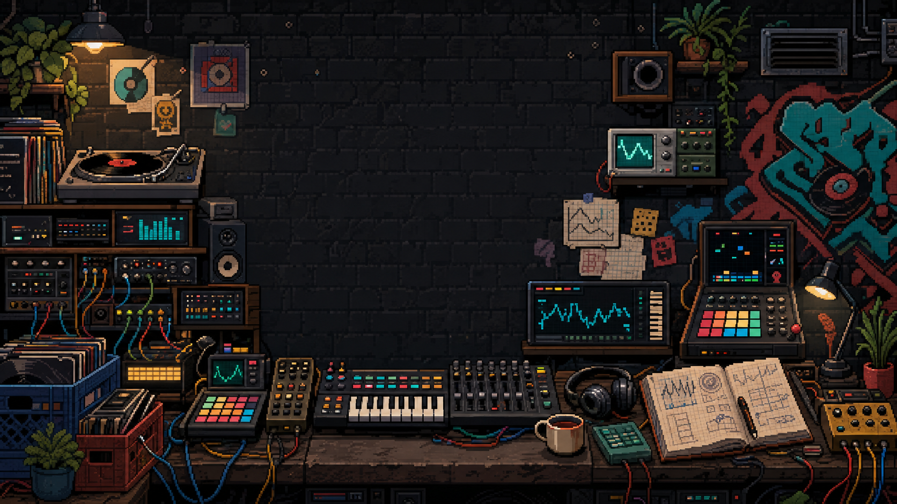
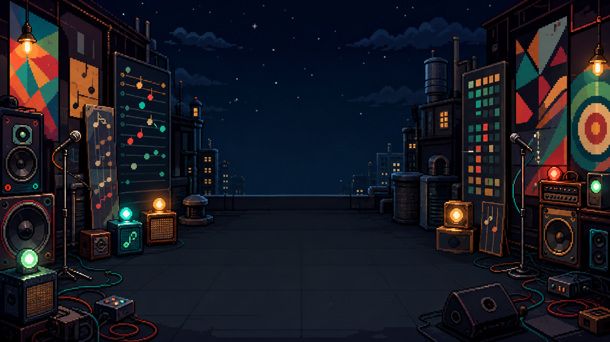
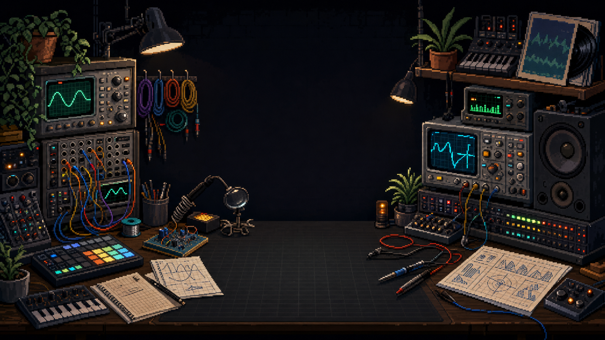

SetScope experience system / V2
Listening Station
One semantic music world. Eight purposeful places. Each keeps its identity while the projection, instrument, and input can change.
01
Environment Library
Original pixel-art environments preserve a dark UI safe area and meaningful crops.




02
Semantic Lights
Room color creates identity. Signal color always preserves meaning.
ActionAmber
DataCyan
SuccessMint
DangerCoral
PlayheadYellow
03
Instrument Grammar
Illustrated room, tactile instrument, quiet evidence.
SignalLOCKED
Pocket94
Tempo96
Instrument screen
Current state stays legible
04
Connected World Contract
The same musical truth can move through many rooms without being rewritten by the presentation.
01World truthSet, track, mission, skill
02Musical eventHeard, hit, matched, saved
03Experience directionCoach, challenge, consequence
04ProjectionScreen, sound, motion, input
05
Production Rules
Every new skin and asset enters through the same quality gate.
Across the roomPrimary action and silhouette are unmistakable.
At arm's lengthLive state, controls, and consequence remain readable.
Up closeStickers, jokes, serials, scuffs, and discoveries reward attention.
Under a thumbEvery priority target is at least 44px with no hover dependency.